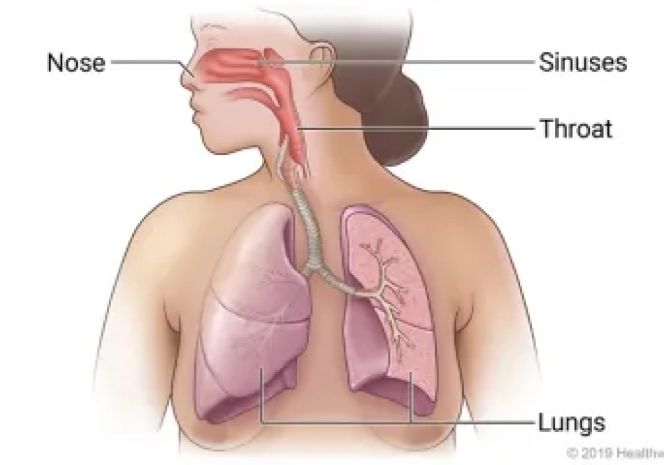
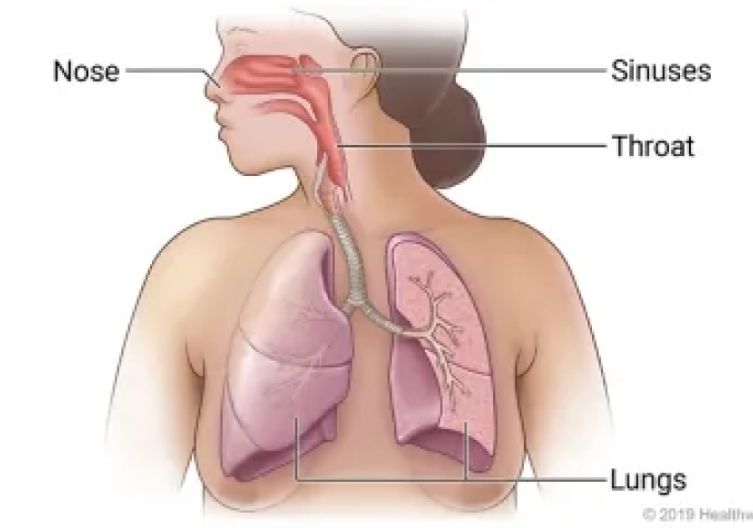

Treatment
Treatment for a respiratory infection will depend on what is causing the infection. In severe cases,
hospitalization may be required.
In cases of bacterial infection, antibiotics will be prescribed. Other treatments may include:
- Medication, including:
- Cough suppressants
- Expectorants (to loosen congestion)
- Inhaled corticosteroids
- Pain relievers
- Special medications approved for tuberculosis
- Lifestyle changes, including
- Increased fluids
- Rest
- Supplemental oxygen
Preventing respiratory infections is important if you have lung disease or autoimmune disease or other serious and chronic illnesses. Limit time spent with anyone who is sick and wash your hands frequently. Also, ask your physician about the pneumococcal vaccine .
Top Products used by the world:
1. Antibiotics (for bacterial infections)
3. Bronchodilators
4. Expectorants
5. Antipyretics and analgesics
 
